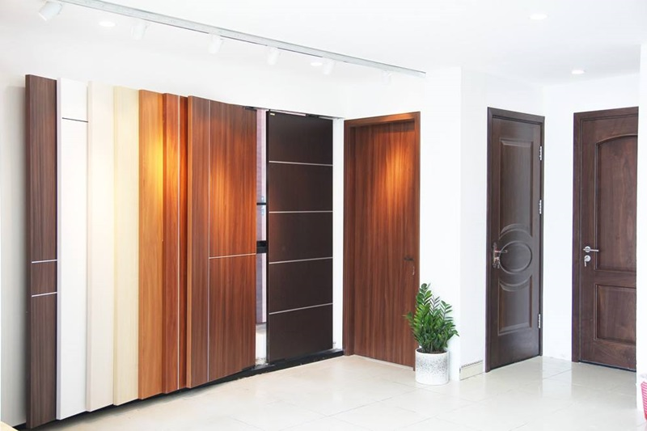

XU HƯỚNG GIÁ CỬA GỖ CHỐNG CHÁY 2024?
Khi việc xây dựng công trình ngày càng chú trọng đến yếu tố an toàn phòng cháy chữa cháy, việc lắp đặt hệ thống cửa chống cháy trở nên quan trọng hơn bao giờ hết. Tuy nhiên, xu hướng giá cả của sản phẩm này trên thị trường trong năm 2024 đang là mối quan tâm lớn của các chủ đầu tư, nhà thầu và người tiêu dùng.

Các yếu tố ảnh hưởng đến giá cửa gỗ chống cháy
Hiện nay, cửa gỗ chống cháy được ứng dụng trong nhiều công trình, đặc biệt là các tòa nhà chung cư, thương mại. Các yêu cầu về kỹ thuật cũng như khả năng ngăn cháy, cách nhiệt ngày càng được quy định khắt khe hơn trong các văn bản pháp luật. Giá cửa gỗ chống cháy chịu ảnh hưởng từ nhiều yếu tố khác nhau, bao gồm:
- Chi phí nguyên vật liệu: các loại gỗ đặc biệt có khả năng chịu lửa cùng với các vật liệu cách nhiệt như bông khoáng, silicat khoáng… chiếm tỷ trọng lớn trong giá thành.
- Chi phí sản xuất và gia công: quá trình gia công, lắp ráp, kiểm định và hoàn thiện cửa gỗ chống cháy đòi hỏi công nghệ, kỹ thuật và nhân công chuyên nghiệp, do đó chi phí sản xuất không thể thấp.
- Chi phí vận chuyển và lưu kho: với kích thước và trọng lượng lớn, chi phí vận chuyển và lưu kho cửa gỗ chống cháy cũng ảnh hưởng đáng kể đến giá bán.
Xu hướng giá cửa gỗ chống cháy trong năm 2024
Dựa trên các yếu tố trên, chúng ta có thể nhận định được xu hướng giá cửa gỗ chống cháy trong năm 2024:
- Giá nguyên vật liệu có thể tăng: giá gỗ và các vật liệu cách nhiệt dự kiến sẽ tăng do ảnh hưởng của biến động giá nguyên liệu thế giới, chi phí vận chuyển và nguồn cung.
- Chi phí sản xuất và vận hành có thể tăng: sự thiếu hụt lao động lành nghề và tăng chi phí nhân công trong ngành xây dựng có thể làm tăng chi phí sản xuất và lắp đặt cửa gỗ chống cháy.
- Nhu cầu và tiêu chuẩn an toàn ngày càng tăng: xu hướng chú trọng an toàn PCCC trong xây dựng sẽ thúc đẩy nhu cầu cửa gỗ chống cháy. Các tiêu chuẩn an toàn về phòng cháy chữa cháy được siết chặt hơn, đòi hỏi các sản phẩm phải đáp ứng yêu cầu kỹ thuật cao hơn.
Chiến lược mua sắm hiệu quả
Để có được sản phẩm cửa chống cháy chất lượng, an toàn và độ bền cao với giá cả phải chăng bạn nên:
- So sánh giá cả và chất lượng của các nhãn hiệu, tìm kiếm các chương trình khuyến mãi, ưu đãi.
- Lập kế hoạch mua sắm sớm để chủ động nguồn cung và ký kết hợp đồng.
- Tham vấn ý kiến của các chuyên gia, kỹ sư để lựa chọn sản phẩm phù hợp và hiệu quả nhất.
Với sự gia tăng về nhu cầu và tiêu chuẩn an toàn, cùng với áp lực về chi phí đầu vào, giá cửa gỗ chống cháy được dự báo sẽ tăng từ 5-10% trong năm 2024. Tuy nhiên, các chiến lược mua sắm thông minh có thể giúp khách hàng tiết kiệm chi phí đáng kể.